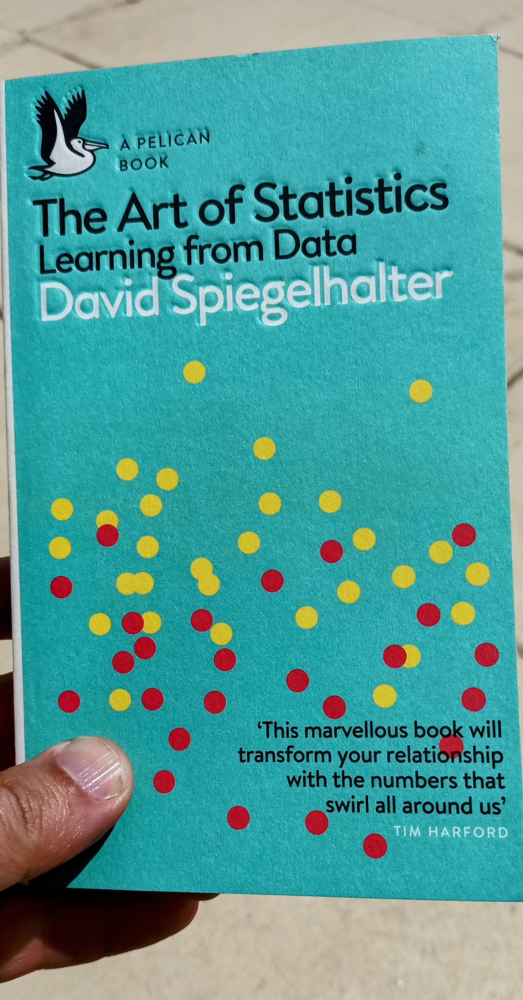

A Review of ‘The Art of Statisitics: Learning from data’
Diving into ‘The Art of Statistics: Learning from Data’ by David Spiegelhalter and its real-world insights into the world of statistics
I’m finally getting around to writing reviews for the books I read during my holidays in early September. It’s the first of November, and I have quite a backlog. Life started happening as soon as I got back home, and with things returning to their normal rhythm, finding time to write has become a challenge. Writing is something I genuinely enjoy and try to make time for every so often.
The first book I read during my stay in Porto Santo was David Spiegelhalter’s The Art of Statistics: Learning from Data. David Spiegelhalter is a renowned British statistician with a long and illustrious career. He has been involved in several high-profile projects where statistics were used to extract information that wasn’t immediately evident. His book provides valuable insights into the world of statistics and data analysis, making it a compelling read for anyone interested in this field.

I have extensively studied statistics at BSc, MSc, and PhD levels, both in theoretical statistics courses and more applied statistics, like Hydrology, a course that everyone failed during my BSc. So, this is a subject where I can comfortably say that I know quite a few things. Yet, David’s book proved to be a very interesting, insightful, and entertaining read. David’s approach is down to earth, grounded in actual examples that everyone can relate to and understand.
I particularly enjoyed his exploration of the ongoing Kaggle exercise on forecasting the survival of Titanic passengers and how several data mining models play a role in determining whether a passenger would be more likely to survive. The story of how Karl Dahl, the most surprising survivor, successfully deceiving all the data models was remarkably intriguing.
A few months ago, I had to prepare a statistics course for an African telco corporate client. We were going to have three groups of participants who needed to develop a practical understanding of statistics. Given the practical scope of the course, we took an approach that was neither purely Statistics 101, nor strictly Excel, nor exclusively data science. It was a mixture of all these approaches. We structured each three-hour session around a subject. In the first half of the class, we took a theoretical approach to the subject, and for the remaining hour and a half, the participants were divided into groups, given a dataset, and tasked with applying the concepts to extract information using Excel. I was pleased to see that I had followed a similar order, structure, and approach to what David Spiegelhalter had used in The Art of Statistics. The participants faced challenges with the theoretical concepts; the practical exercises proved to have an invaluable role in consolidating the concepts, and in the end, both the participants and the corporate client were happy with the course. The corporate client wanted to contract five additional groups; however, we were leaving the market, and the vehicle that was used to invoice the service was no longer available. I hope to have another opportunity in the future to deliver these contents to other groups, where I will certainly revisit David’s book to enrich the contents with his insights.
As a final note, in the concluding part of The Art of Statistics: Learning from Data, David presents and explores Bayesian statistics. Bayesian statistics is an area of David’s expertise. The chapter “Learning from experience the Bayesian way” introduces these concepts in an insightful and interesting manner. I understand that the scope of The Art of Statistics involves translating technical concepts into a more easily accessible language for the general public, and that a more in-depth exploration of Bayesian statistics would be beyond the book’s scope. However, this was a subject that I wanted to learn more about, and I would have really liked to see it explored in more depth with the same down-to-earth approach.
Whether you are already well-versed in statistics or someone looking for a first, insightful approach to this increasingly relevant subject, I strongly recommend reading The Art of Statistics: Learning from Data.
Citation
@online{granja-correia2023,
author = {Granja-Correia, João},
title = {A {Review} of “{The} {Art} of {Statisitics:} {Learning} from
Data”},
date = {2023-11-02},
url = {https://joao.granja-correia.eu/blog/blog_20231102_The_Art_of_Satitistics},
langid = {en}
}